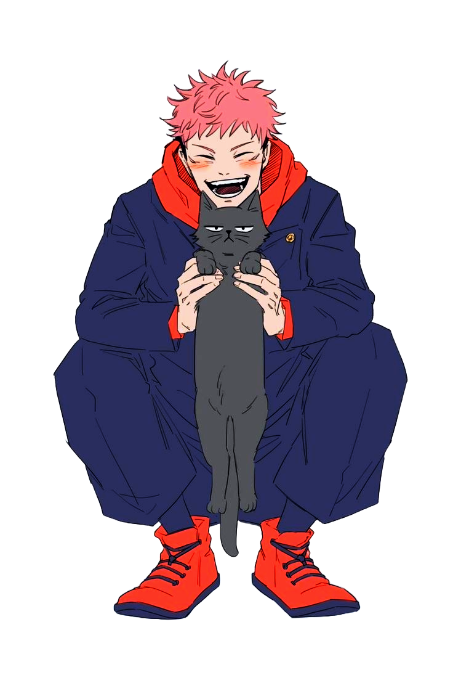

Hi! Call me Questy
and I wish I was everything I can be and also

I Thought
I can use any font I want because this is my website
I am learning this from CodeWithHarry
My neck is about to break
Its 1:08 am on 15th of May 2025
This is my first website I am going to share to the world, no matter how tacky it is
I am learning how Harry in CodeWithHarry is able to create the website from scratch without any reference, and I am hoping to do so like that one day and I know I will because I will be consistent
My lostgirllogs account is actually helping me to stay accountable on daily basis
I am learning this from CodeWithHarry
My neck is about to break
Its 1:08 am on 15th of May 2025
This is my first website I am going to share to the world, no matter how tacky it is
I am learning how Harry in CodeWithHarry is able to create the website from scratch without any reference, and I am hoping to do so like that one day and I know I will because I will be consistent
My lostgirllogs account is actually helping me to stay accountable on daily basis